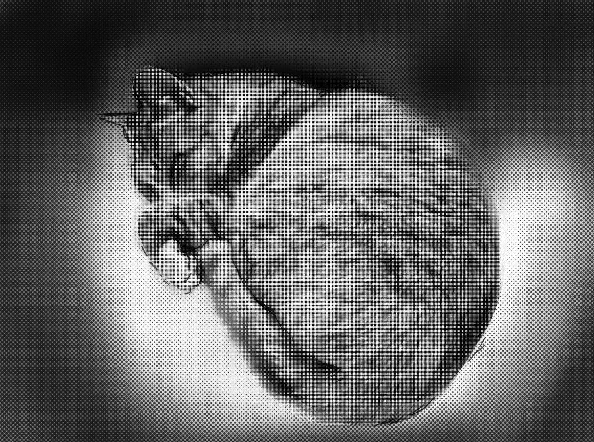
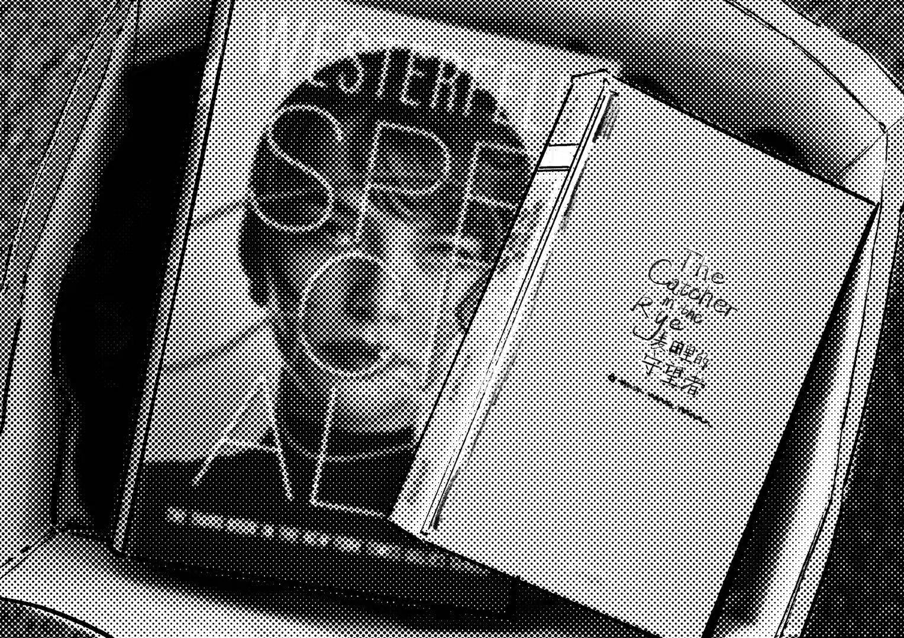
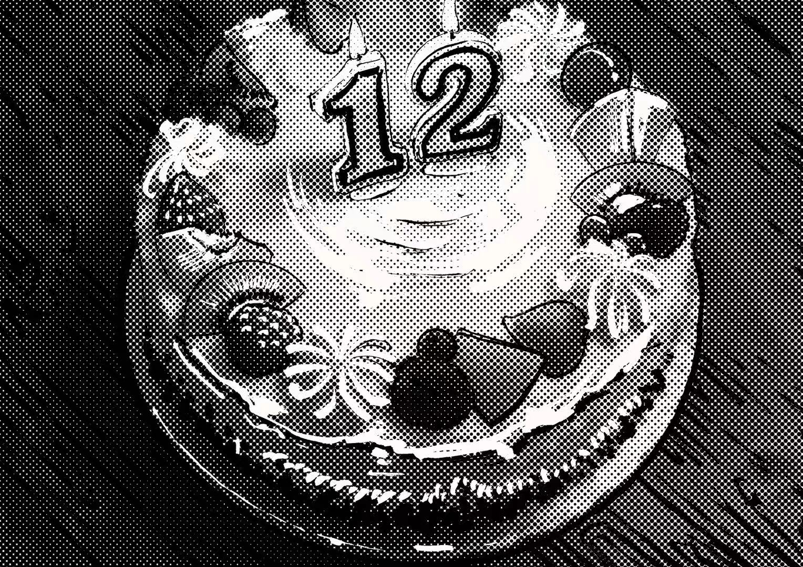

关心我的
3
位好友特别关心
空间统计
156
日志阅读
47
留言
3
特别关心
12
收藏
精选相册
更多

发布新日志
我的日志
更多日志
又是我
2023年8月12日
终于收到了青苗中学的录取通知书，全家都为我高兴。这份成绩是自己努力的结果，也让我更加坚定了自己的方向。
点赞(15)
评论(8)
分享
又是我
2023年1月25日
买了《麦田里的守望者》和《丑人儿》两本书，文字让我安静下来，思索生活中的意义。
《麦田里的守望者》 - J.D.塞林格
《丑人儿》 - 斯科特·韦斯特费尔德

点赞(12)
评论(5)
分享
又是我
2022年11月23日
为弟弟庆祝了12岁生日，他很开心。最近学习压力很大，今天真是难得愉快的一天。

点赞(20)
评论(10)
分享